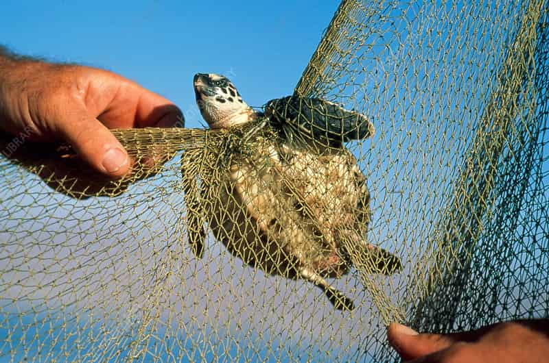

Threats to turtles
Get to know of all the threats to these turtles!
Fisheries by catch
Bycatch, or the accidental capture of non-target animals including dolphins, marine turtles, and seabirds, occurs anywhere there is fishing. Every day, thousands of kilometres of nets and lines are deployed in the waters of the world. Modern fishing equipment is particularly effective at catching the intended fish species—as well as anything else in its path—and is frequently invisible to the naked eye and quite powerful. Numerous marine animals, including turtles, dolphins, and young fish, are dragged up with the catch and dumped overboard after they have died or are in grave condition.Leaders in the fishing sector are becoming more and more aware of the need to stop this situation. There are tried-and-true remedies, such adjusting fishing gear to prevent non-target species from being captured or escaping. These alterations are frequently quick and affordable, and they frequently originate from the fishermen themselves.Bycatch is still a significant concern despite modern technology and corporate acknowledgement of the problem. The methods of fishing can be damaging to the marine habitats where they are used, in addition to resulting in unnecessary fatalities and injuries. By collaborating with fisheries and assisting in the development and promotion of innovative technology and equipment for more effective operations, the world seeks to decrease bycatch.
Consequences
~drowning in nets and not being able to breathe
~Turtles being killed by nets and trawls
~Decline of turtle population
~Baby turtles being tangled in the net holes
~All sorts of micro plastic,garbage and marine debris in the nets being accidently fed to the turtles

How to prevent this
~Use Turtle Excluder Devices(TEDs)
~Raise awareness among the people of the community
~Reduce fishing net use
~Use thicker twine on the fishing nets
How can we help?
Coastal development
Construction of residences, hotels, restaurants, and roads right on the beach is one example of the many human activities that fall under the wide category of coastal development, which is frequently done for tourist purposes. The construction of oil platforms, seawalls, nearshore dredging, and beach renourishment are all mentioned. Over the next ten years, the percentage of people who live on or within 100 miles of a coastline will probably rise significantly.The human modification of coasts drives nesting females to utilize alternative beaches, alters the characteristics of nesting beaches, and adds to runoff and wastewater discharge that pollutes the habitat of sea turtles. More people living along the shore means more people driving to the beach and for pleasure.Sea turtles typically go back to the beaches where they were born to lay eggs after they reach sexual maturity. Beach chairs and other items left behind on the sand present challenges for females that are trying to nest, often leading to unsuccessful efforts. As they become caught in depressions and are unable to reach the water, obstacles on beaches can also pose a threat to hatchlings.
Consequences
~Causes pollution from runoff and litter which can pollute water near shore where sea turtles’ mate
~Causes ditches and bumps that make it difficult for females to navigate the beach
~light pollution from coastal buildings and pathways confuses hatchlings who use the moonlight to navigate their way safely to the water
~encroachment on available nesting sites
How to prevent this
~Don’t build armoring structures on the beach
~Locate homes as far landward on a coastal lot as possible
~Promote coastal construction set-back policies
~Help restore and protect dunes by not trampling on them and by planting native vegetation on dunes
~Be aware of local beach and dune system dynamics
How can we help?

Marine Debris
According to UNESCO Facts & Figures on Marine Pollution, plastic litter in the water kills about 1 million marine species annually, including fish, sharks, turtles, and birds. Global waters are thought to contain 100 million tons of plastic at this time. Another 60 billion pounds are anticipated to be generated only this year. Plastic accumulation is thought to cover 5 million square miles in certain places. To put that into perspective, that is comparable to the combined area of the United States and India. How did all much plastic end up there? The source of 80% of the plastic waste is land.It exits through storm drains and into rivers and streams. It disperses from landfills and ends up everywhere in the stomachs of sea turtles. Most of the debris can be identified. The garbage is made up of plastic bags, bottles, balloons, deteriorated buoys, packing materials, and food wrappers. Although huge plastics are a significant contaminant, these polymers eventually degrade into smaller, more harmful fragments. In addition to being simpler to consume, these little plastics serve as hosts for invading species, spreading them to other oceanic regions and further escalating the harm that plastics inflict. Additionally, some plastics have harmful compounds that go into the water and the food chain.
Consequences
~Plastic bags can be mistaken for jellyfish and can be eaten by sea turtles
~Microplastic may end up in their meals and being fed accidently
~The risk of becoming trapped in it while swimming
~Hatchlings might become entangled in the material and be lost while attempting to reach the ocean
How to prevent this
~Say NO to plastic! try not to use plastic as much as possible(Plastic is a turtle's worst enemy)
~Stop littering in the beach
~Avoid using microplastics
~Participate in shoreline cleanups
How can we help?